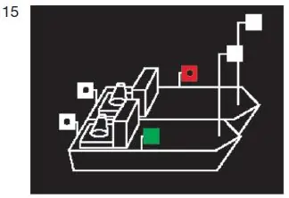
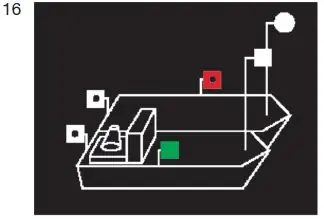

§ 3.11 Bezeichnung gekuppelter Fahrzeuge in Fahrt(Anlage 3: Bild 15, 16)
Binnenschifffahrtsstraßen-Ordnung
1. Gekuppelte Fahrzeuge in Fahrt müssen bei Nacht führen:
a) auf jedem Fahrzeug das Topplicht nach § 3.08 Nummer 1 Buchstabe a; auf Fahrzeugen ohne Maschinenantrieb kann dieses Topplicht jedoch an einer geeigneten Stelle und nicht höher als das Topplicht des Fahrzeugs oder der Fahrzeuge mit Maschinenantrieb durch das Licht nach § 3.09 Nummer 3 ersetzt werden; |  |
b) die Seitenlichter nach § 3.08 Nummer 1 Buchstabe b; diese Lichter müssen an der Außenseite der äußeren Fahrzeuge gesetzt werden, und zwar möglichst in gleicher Höhe und mindestens 1,00 m tiefer als das niedrigste Topplicht; c) auf jedem Fahrzeug ein Hecklicht nach § 3.08 Nummer 1 Buchstabe c. |  |
2. Die gekuppelten Fahrzeuge müssen die Lichter nach Nummer 1 auch dann führen, wenn ihnen vorübergehend auf kurzer Strecke ein Vorspann vorausfährt; der Vorspann muss die Lichter nach § 3.09 Nummer 1 Buchstabe a Satz 1 führen.
3. Jedes gekuppelte Fahrzeug muss die Bezeichnung nach § 3.09 Nummer 3 Satz 1 Buchstabe b führen, wenn ihm bei Tag vorübergehend auf einer kurzen Strecke ein Vorspann vorausfährt; der Vorspann muss die Bezeichnung nach § 3.09 Nummer 1 Buchstabe b Satz 1 führen.
4. Nummer 1, auch in Verbindung mit Nummer 2, und Nummer 3 gelten nicht für ein Kleinfahrzeug, das nur Kleinfahrzeuge längsseits gekuppelt führt, und nicht für ein längsseits gekuppeltes Kleinfahrzeug. Für ein Kleinfahrzeug nach Satz 1 gilt § 3.13 Nummer 2 und 3.